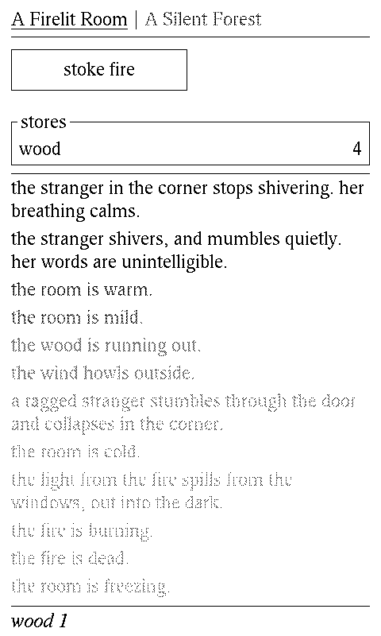
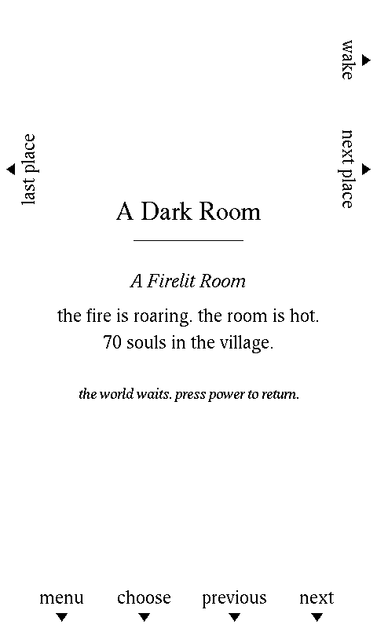
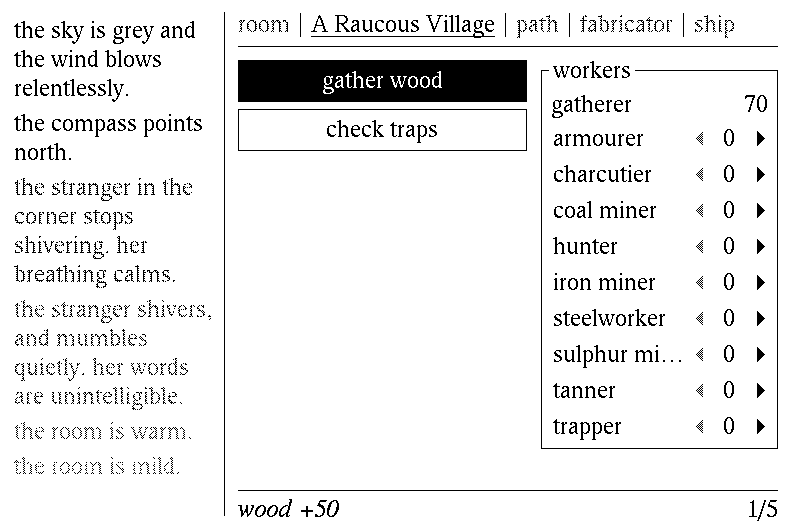
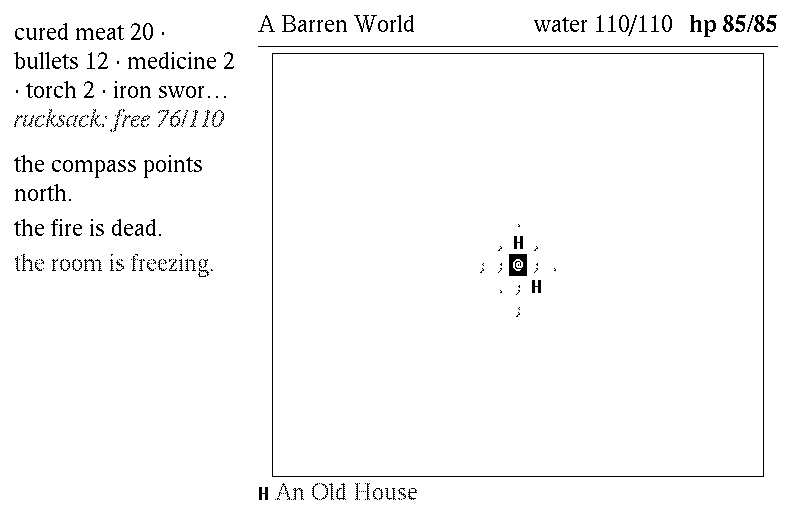
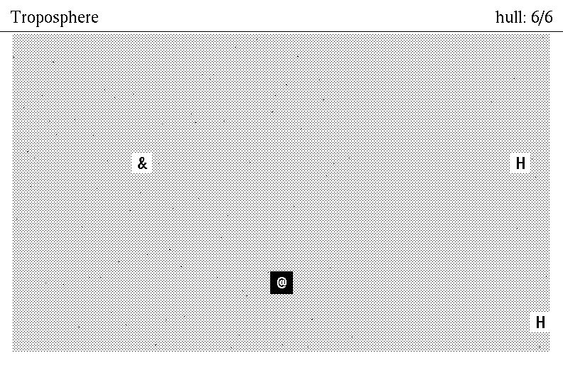

the room and its fire, the stranger who builds, the village, the dusty path, the barren world, the battleship and the old starship. the whole of A Dark Room, as firmware for the Xteink e-paper readers, redrawn for glass that holds its image without power.
the flasher's own words
the glass
every timer the browser ran (the fire cooling, the builder, the traders, a fight) is part of the save, so the world waits while the device sleeps, and goes on when it wakes. a frame reaches the glass only when something on it changes. these are the firmware's own screens, drawn by its tests.





on the keys, the side keys go between places, the four below the glass move the focus and press it, and Back is the menu. on the X4 Pro, touch what you would click; a long press shows what a thing costs. the menu keeps the browser's lights and hyper, and adds the pace of fights, when to sleep, and which way up to hold it.
before you start
- a computer with Chrome, Edge or another Chromium browser. Firefox, Safari and phones cannot reach a device over USB.
- a USB-C cable that carries data, not only charge.
- wake the device, plug it in, then press flash and choose it in the list the browser shows (it may be called USB JTAG/serial debug unit).
- this replaces the reader on the device with the game. the books on its SD card are not touched.
- before anything is written, the chip is asked what it is: the X4 Pro and X4 Classic are ESP32-S3s, the X3 and the first X4 are ESP32-C3s. choosing the wrong family stops there.
- to go back to the reader it came with, turn on save what is on it first: the page reads the whole flash to a file before it writes.
if the device is not in the list, or does not answer: wake it again (a sleeping device leaves the USB bus), try another cable or port, and close anything else holding the port, such as a serial monitor or another tab.
the way back
- from a backup. write a backup back…, beside the flash button, writes a file this page saved (or any whole-flash image) over everything, from 0x0.
- without a computer. put another firmware on the SD card as
/update.bin, then hold Up and Down while pressing Power to wake it: the game's recovery boot flashes that file. - by hand.
esptool.py write_flash 0x0 backup.bin, or any other firmware's own installer.
the source
the game is doublespeak games' A Dark Room, its text, costs, odds and timings kept as they are; the port to C++, on the FreeInk SDK, is at github.com/subtlepath/adarkroom, with how to build it, test it and flash it by hand.
A Dark Room © doublespeak games, under the Mozilla Public License 2.0, as is this port. Times © Adobe Systems and Digital Equipment Corporation; UW ttyp0 © Uwe Waldmann. Flashing by Espressif's esptool-js (Apache 2.0). Not made by, or affiliated with, Xteink.